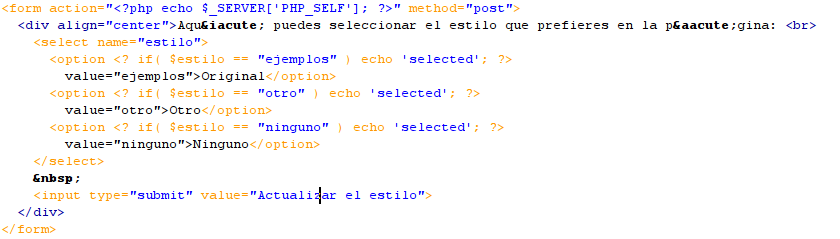

Veo si recibo datos del formulario
if(isset($_POST["estilo"])){
Si es que estoy recibiendo un estilo nuevo, lo tengo que meter en las cookies
$estilo = $_POST["estilo"];
Meto el estilo en una cookie
setcookie("estilo", $estilo, time() + (60 * 60 * 24 * 90));
Si no he recibido el estilo que desea el usuario en la p�gina, miro si hay una cookie creada
}else{
if (isset($_COOKIE["estilo"])){
Es porque tengo la cookie
$estilo = $_COOKIE["estilo"];
Si no tengo Cookie, tomo el estilo de los ejemplos
}else{
$estilo = "ejemplos";
}
}
Aqui se define la ruta de acceso a las diferentes páginas de estilo
$ruta = "skins/";
Miro si tengo un estilo definido, porque entonces tengo que cargar la correspondiente hoja de estilos
if( isset($estilo) ){
echo '< link rel="STYLESHEET" type="text/css" href="' . $ruta.$estilo . '.css">
';
}else{
echo '< link rel="STYLESHEET" type="text/css" href="' . $ruta. 'ejemplos.css">';
}
?>
Por último se crea el formulario donde solicitará cada estilo
